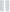

<link rel="import" href="../../bower_components/polymer/polymer.html">
<link rel="import" href="../../bower_components/iron-flex-layout/iron-flex-layout.html">
<link rel="import" href="../../bower_components/iron-image/iron-image.html">
<link rel="import" href="../kw-share-shell/kw-share-shell.html">
<link rel="import" href="../kw-view-comment/kw-view-comment.html">
<dom-module id="kw-share-detail">
	<template>
		<style>
			:host {
				display: block;
				@apply --layout-vertical;
				@apply --layout-center;
			}
			
			.detail {
				width: 100%;
				height: 480px;
				background: white;
			}
			
			.detail>iron-image {
				width: 100%;
				height: 100%;
				border-radius: 3px;
			}
			
			.bottom {
				@apply --layout-vertical;
				min-height: 30px;
				margin: 16px;
			}
			
			iron-image.cover {
				@apply --layout-flex;
				z-index: 0;
				background: inherit;
				border-radius: 3px;
				margin:12px;
			}
            .stats {
                @apply --layout-horizontal;
                color: #435055;
                font-size: 12px;
                margin-bottom: 12px;
				margin-top: 26px;
            }

	        .stats .likes,
            .stats .comments,
            .stats .shares {
                height: 20px;
            }
            .stats .likes span,
            .stats .comments span,
            .stats .shares span{
                padding-right: 16px;
            }
            .stats .likes span img,
            .stats .comments span img,
            .stats .shares span img{
                padding-right: 6px;
            }

			.bottom .content {
				@apply --layout-horizontal;
				margin-top: 16px;
				margin-bottom: 16px;
			}
			
			.bottom .content .description {
				@apply(--layout-flex-3);
				color: rgba(97, 97, 97, 0.14);
			}
			
			.bottom .content .description h3 {
				margin: 0;
				font-size: 16px;
				line-height: 23px;
				color: #435055;
				font-family: "bariol";
			}
			
			.bottom .content .description p {
				color: #616161;
				margin-right: 16px;
				font-family: "bariol";
				font-weight: normal;
				font-size: 16px;
				margin-top: 8px;
				margin-bottom: 8px;
			}
			
			.bottom .content .actions {
				width: 25%;
				@apply --layout-horizontal;
				@apply(--layout-center);
				@apply(--layout-end-justified);
				padding-top: 5%;
			}
			
			.bottom .content .actions button img {
				position: relative;
				top: 2px;
				left: 2px;
			}
			
			.orangebutton {
				background-color: #FF8413;
				border-radius: 5px;
				width: 79px;
				height: 32px;
				color: white;
				border: none;
			}
			
			.remixbutton {
				width: 79px;
			}
			
			.bottom .line {
				height: 1px;
				width: 100%;
				display: block;
				background-color: rgba(99, 107, 126, .24);
			}
			
			div[tombstone].bottom .likes,
			div[tombstone].bottom .comments,
			div[tombstone].bottom .shares {
				width: 80px;
				height: 20px;
				background: rgba(0, 0, 0, 0.01);
				color: transparent;
			}
			
			.orangebutton {
				background-color: #FF8413;
				border-radius: 5px;
				width: 79px;
				height: 32px;
				color: white;
				border: none;
			}
			
			.remixbutton {
				width: 79px;
			}
			.playercontrol {
				@apply --layout-horizontal;
				@apply(--layout-center);
				width: 100%;
				margin: 9px;
			}
			
			.playercontrol .pause {
				@apply(--layout-justified);
			}
			
			.playercontrol .replay {
				@apply(--layout-justified);
			}
			
			.playercontrol .lineV {
				@apply(--layout-justified);
				height: 20px;
				width: 1px;
				display: block;
				background-color: rgba(99, 107, 126, .24);
				margin-right: 16px;
				margin-left: 16px;
			}
			
			.playercontrol .fullscreen {
				@apply --layout-end-justified;
				padding-right: 9px;
			}
			
			.space {
				@apply(--layout-flex);
			}
		</style>
		<kw-share-shell id$="[[share.slug]]" share="[[share]]">
			<div slot="share-detail">
				<div id="share" class="detail">
					<iron-image src="[[share.cover_url]]" sizing="cover"></iron-image>
				</div>
				<div class="bottom" tombstone$="[[!share]]">
					<div class="playercontrol">
						<div class="pause">
							<span></img></span>
						</div>
						<div class="lineV"></div>
						<div class="replay">
							<span> </img></span>
						</div>
						<div class="space"></div>
						<div class="fullscreen">
							<span> </img></span>
						</div>
					</div>
					<div class="line"></div>
					<div class="content">
						<div class="description">
							<h3>[[share.title]]</h3>
							<p>[[share.description]]</p>
						</div>
						<div class="actions">
							<button type="submit" class="orangebutton remixbutton" onclick="">remix </button>
						</div>
					</div>
					<div class="line"></div>
					<div class="stats">
						<div class="likes">
							<span> </img>[[share.likes.length]] likes</span>
						</div>
						<div class="comments">
							<span> </img>[[share.comments_count]] comments</span>
						</div>
						<div class="shares">
							<span> </img>share</span>
						</div>
					</div>
				</div>
				<kw-view-comment></kw-view-comment>
			</div>
		</kw-share-shell>
	</template>
	<script>
        Polymer({
            is: 'kw-share-detail',
            properties: {
                share: {
                    type: Object
                }
            },
            getShareElement () {
                return this.$.share;
            }
        });
    </script>
</dom-module>